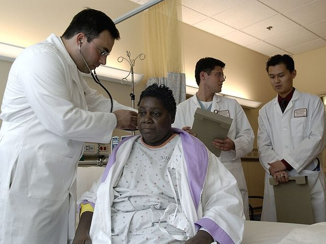
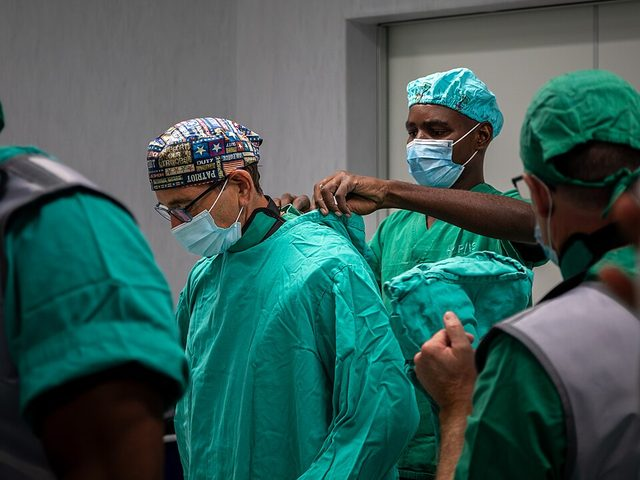
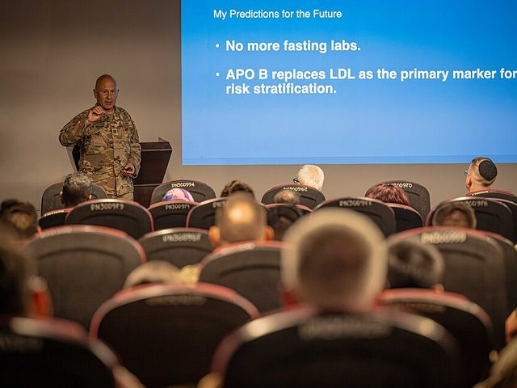
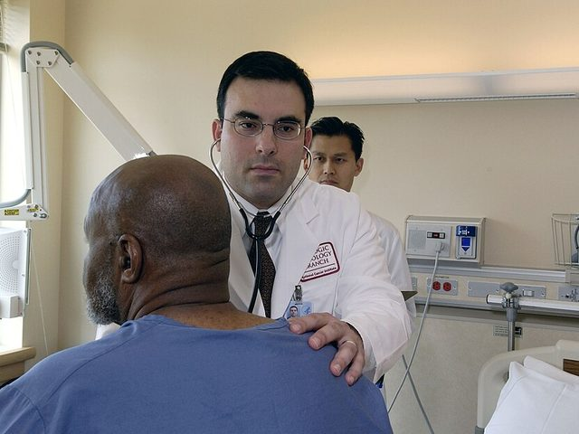
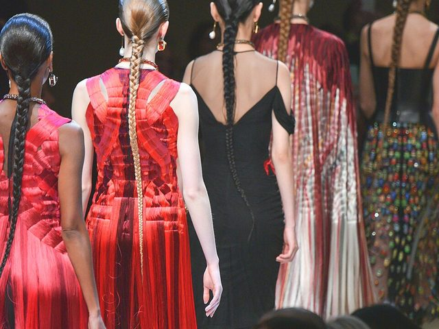
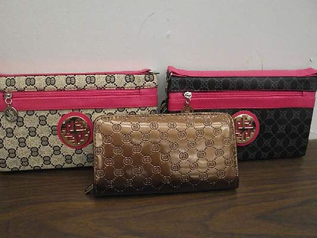

Trước khi vào bài
Hoạt động 1 · Quần áo và vẻ ngoài trong đời làm nghề của bạn

Gợi ý trả lời
Most of them wear a white coat over smart but comfortable clothes. Patients expect it, and it presents a professional image — although on a hot day it isn't the most practical thing to wear.

Gợi ý trả lời
Scrubs are clean, loose-fitting and easy to put on and take off, so they cut down the risk of infection. Nobody is allowed into theatre in their own clothes.

Gợi ý trả lời
I'd go for a dark suit, a plain shirt and comfortable shoes, because first impressions count. I wouldn't be seen dead in trainers or a T-shirt on stage.

Gợi ý trả lời
He's casually dressed in a plain blue top. Appearance can be a clue: a patient who looks scruffy and untidy when they used to be well-dressed may be depressed or unwell.

Gợi ý trả lời
I'd explain that catwalk models are far thinner than is healthy, that those images set unrealistic standards, and that being slimmer doesn't mean being more attractive.

Gợi ý trả lời
No, I wouldn't. It's a knock-off: it looks as good as the real thing, but it's illegal, it's probably badly made, and the fake trade damages the genuine brands.
Ảnh 5: Christopher Macsurak, CC BY 2.0 (Wikimedia Commons). Ảnh 1, 2, 3, 4, 6: public domain (NIH, U.S. Army, U.S. Navy, U.S. CBP — Wikimedia Commons).
Hoạt động 2 · Bạn đã có bao nhiêu từ cho 6 nhóm?
What are the people around you wearing right now?
Gợi ý từ
suit · sweatshirt · jeans · jacket · T-shirt · polo shirt · top · shorts · dress · jumper · shirt · tie · shawl · outfit · gear · boots · sandals · trainers · high-heeled shoes · flip flops · bracelet · earrings · necklace · ring · hood · helmet · hat · baseball cap · woollen · leather · cotton · silk · polyester · suede · fur · striped · faded · knitted · sparkly · second-hand · open-necked · short-sleeved · V-neck · knee-length · handmade
How would you describe a colleague's style in three words?
Gợi ý từ
casual · smart · stylish · comfortable · elegant · practical · outrageous · fashionable · untidy · scruffy · tatty · classy · sophisticated · laid-back · fashion-conscious · ordinary · cool · look smart · casually dressed · dressed up for a special event · good taste · image · bright colours · in comparison
What do you do with clothes — from the shop to the wardrobe?
Gợi ý từ
dress up · slip on · pull on · put on · take off · try on · put together · stand out · fit in with · keep up with · take back · save up · cut down · go out · add to · get away with · go up · go on · go for · go back · go over · go ahead · wake up · go clubbing
How important is fashion to you — and how would you say so in English?
Gợi ý từ
I prefer to wear … · What I absolutely love is … · I wouldn't be seen dead in … · … isn't really my scene · I don't really mind what I wear · clothes are important to me · my image is really important to me · I favour the casual look · comfortable as well as stylish · I'm not a suit man · (the least) fashion-conscious · get away with casual stuff
Trainers or leather shoes for a ward round — how many ways can you compare them?
Gợi ý từ
-er than · more … than · the most … · the -est · less … than · the least … · not as … as · a bit / slightly / a lot / much / far + comparative · by far / easily + superlative · more commonly · less seriously · better · worse
What is wrong with the fashion industry, in your view?
Gợi ý từ
the fashion industry · fashion houses · supermodels · underweight models · the catwalk · designer labels · brands · luxury items · counterfeit goods · knock-offs · imitation goods · fake designer goods · the genuine product · cheap copies · illegal activity · market stalls · value for money · free advertising · fight back · damage the brands · reduce sales · high-tech solutions · the least achievable figure · look like supermodels